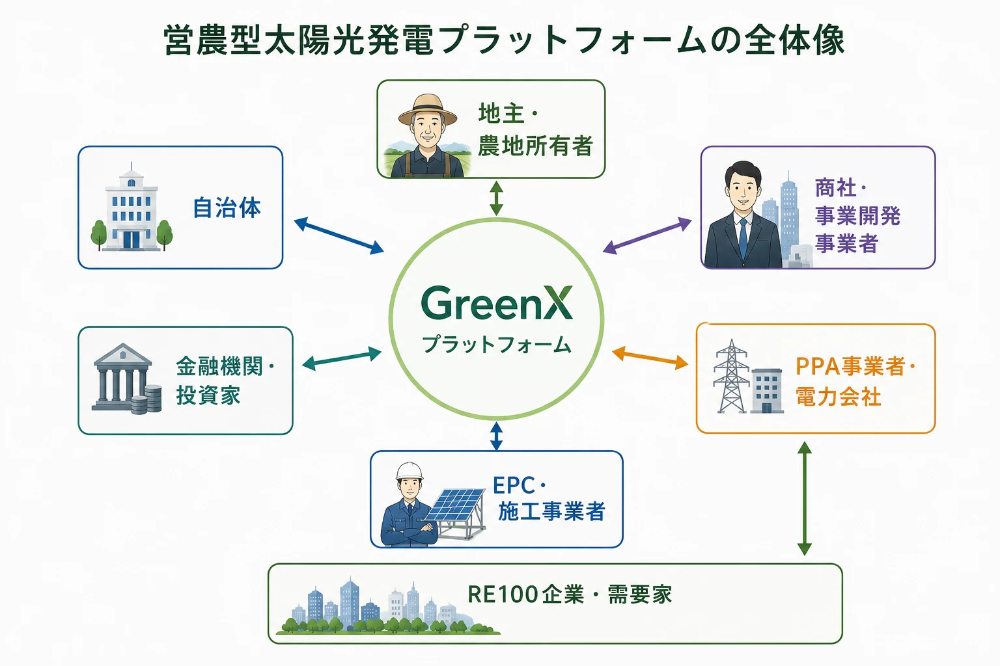

太陽が、農業をよみがえらせる。
作物を育てる光と、電気を生む光。営農型太陽光発電(ソーラーシェアリング)は、ひとつの農地からふたつの恵みを得る仕組みです。私たちは、農地・農家・企業・事業者をつなぐ総合プラットフォームとして、日本の農業と地域の未来をひらきます。
あなたの目的から、はじめる。
営農型太陽光発電には、農地を持つ方、耕す方、電気を使う方、事業をつくる方 ── それぞれの関わり方があります。あなたに合った入口からお進みください。
土地をお持ちの方へ
未利用農地を活かしたい
相続した農地、耕作をやめた田畑。手放さずに収益を生む土地へ。まずはお気軽にお問い合わせください。
詳しく見る農家・農業法人の方へ
農業をもっと元気にしたい
営農収入に売電収入を重ねるダブルインカムで経営を安定させる。ソーラーシェアリングを始めたい農家の入口です。
詳しく見る企業・団体の方へ
再エネ電力を調達したい
RE100・脱炭素経営に、地域の農地から生まれる追加性のある再エネを。コーポレートPPAのご相談を承ります。
詳しく見る商社・投資家・事業者の方へ
営農型太陽光発電事業に参入したい
用地開発から許認可、EPC、営農管理まで。開発ロードマップの全工程をワンストップでご支援します。
詳しく見る営農型太陽光発電とは
農地の上に間隔を空けて太陽光パネルを設置し、その下で農業を続けながら発電も行う仕組みです。「ソーラーシェアリング」とも呼ばれ、光を作物と発電で分かち合うことから名付けられました。
- 農地はそのまま、農業は続ける。 農地転用ではなく「一時転用」の制度を使うため、農地は農地のまま。営農の継続が制度の前提です。
- 収入の柱がひとつ増える。 営農収入に売電収入が加わり、天候や相場に左右されにくい経営基盤をつくれます。
- 作物に合わせた設計。 多くの作物は必要以上の強い光を使い切れません。適切な遮光率の設計により、営農と発電の両立が可能です。
なぜいま、営農型太陽光発電なのか
1国の計画が、太陽光発電の大幅な拡大を求めている
2025年に閣議決定された第7次エネルギー基本計画は、再生可能エネルギーを初めて最大の電源と位置づけました。AI・データセンターの拡大で電力需要そのものが増えるなか、導入しやすい太陽光発電への期待は一段と高まっています。
23〜29%
2040年度の電源構成に占める太陽光発電の見通し(第7次エネルギー基本計画)。現在の約11%から倍増が必要
約2割増
2040年度の電力需要の見通し。AI・データセンター・半導体工場の拡大が需要を押し上げる
774億円
農山漁村の再生可能エネルギーの経済規模(2023年度・農林水産省)。国が営農型の適正な普及を後押し
2しかし、これまでの太陽光発電は行き詰まりつつある
目標は高く掲げられた一方で、従来型の太陽光発電は複数の壁に直面しています。
3答えは、農地の上部空間にある
残された大きな適地が、全国の農地の上部空間です。営農を続けながら発電する営農型太陽光発電は、適地不足・地域共生・農業経営の課題を同時に解く手法として、国も「望ましい営農型太陽光発電」の考え方を明確化し、適正な普及を進めようとしています。
4ただし、営農型太陽光発電の事業化は容易ではない
可能性の大きさとは裏腹に、営農型太陽光発電の事業化には高いハードルがあります。この事業は、農業・許認可・電力のすべてに通じていなければ成立しません。どれかひとつでも欠けると、計画は途中で止まります。
出典:第7次エネルギー基本計画(2025年2月閣議決定)、農林水産省・資源エネルギー庁公表資料をもとに作成
